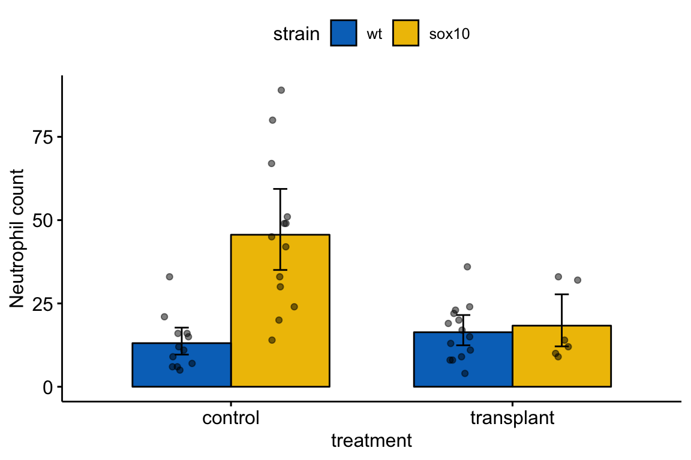
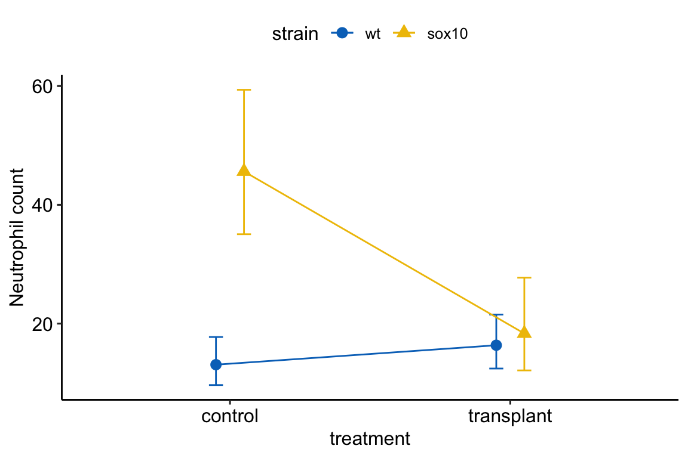

Chapter 14 Adding covariates to a linear model
In its most general sense, Covariates are simply the \(X\) variables in a statistical model. With data from experiments, “covariates” more typically refers to \(X\) variables that are added to a model to increase precision of the treatment effects. In observational designs, covariates might be added to a model to 1) increase predictive ability, 2) because the researcher is interested in specific conditional effects, or 3) to eliminate confounding. These are discussed in later chapters.
14.1 Adding covariates can increases the precision of the effect of interest
I use fake data to introduce the concept of statistical elimination of a covariate in a statistical model. Here I am modeling the effect of a new drug on blood LDL-C levels. LDL is a kind of lipoprotein, which are particles in the blood that transport fats and cholesterol to and from different tissues. LDL-C is cholesterol associated with LDL particles. LDL-C is considered “bad cholesterol” because LDL is believed to transport cholesterol and other lipids to arterial walls, which is the basis for atherosclerosis.
Twenty applied biostats students are recruited and are randomly assigned to either the “placebo” treatment level or “drug” treatment level. The response is blood LDL-C concentration. The drug manufacturer wants a measure of the effect of the new drug on ldlc.
The plot below shows the LDL-C response in the placebo and drug groups, including the group means and 95% confidence intervals.
\[\begin{equation} ldlc = \beta_0 + \beta_1 treatment + \varepsilon \tag{14.1} \end{equation}\]where \(treatment\) is the dummy variable with \(placebo=0\) and \(drug=1\).
Figure 14.1: The fake LDL-C experiment.
The coefficient table is
## Estimate Std. Error t value Pr(>|t|)
## (Intercept) 113.069 1.899 59.548 0.000
## treatmentdrug -1.947 2.685 -0.725 0.478The plot shows large overlap in LDL-C. There “is no effect of the drug (\(p = .478\))” is an incorrect interpretation of the hypothesis test of the estimate of \(\beta_1\). A correct interpretation is, the estimated effect is -1.9 but everything from large, negative effects to moderate positive effects are consistent with the data.
LDL-C is strongly correlated with age and there is a large range in age among the Applied Bistats students. Consequently, age will contribute to a large fraction of the variance in LDL-C. If so, this age-related variance might be masking the effect of the drug. Here is a plot of LDL-C vs. age, with treatment assignment color coded. Remember, these are the exact same values of LDL-C as in figure 14.1 above.

Figure 14.2: Linear regression of \(ldlc\) on dietary \(fat\) fit to the fake LDL-C data. The points are color coded by treatment.
The line is the bivariate regression fit to the data ignoring treatment level.
\[\begin{equation} ldlc = \beta_0 + \beta_1 age + \varepsilon \tag{14.2} \end{equation}\]While the points are color-coded by treatment level, \(treatment\) is not in model (14.2). The color-coding makes it clear that most of the “placebo” data points are above the line, or have positive residuals from the model, while the “drug” data points are below the line, or have negative residuals from the model. A better way to think about this pattern is that at any specific level of age, the LDL-C for drug is lower than the LDL-C for placebo.
What is happening? Age is contributing to the variance of LDL-C, and the noise in \(\varepsilon\) in model (14.1), and this added noise makes it harder to measure the effect of the new drug relative to placebo. Age is masking the effect. If we could somehow measure the effect of the drug at a specific age, then we could get a more precise estimate of the effect. But how to do this? Here are three possible methods. The third is the only one you should use but the second is useful for understanding the third.
We could just analyze a subset of the data, that is, only the cases in which the value of age is nearly equal. This throws away perfectly good data and, consequently, greatly reduces the sample size and thus precision to estimate the effect.
We could use the residuals of the fitted model (??) to estimate the effect of drug treatment (this is what we did by eye in figure 14.2). Here is the new model
where \(ldlc.r\) is the set of residuals.

Now the estimate of the effect is -4.7 mg/dL blood and the SE is only 0.88. In this two-stage analysis (stage 1: fit ldlc ~ age to get residuals, stage 2: fit residuals ~ treatment), we have eliminated the effect of age on the variance of the response and, as a consequence, the estimate of the effect of the drug is much more precise – the effect of \(treatment\) has a smaller standard error.
- A better method for this two-stage procedure that increases the precision of the estmate of the treatment effect by eliminating variance of a covariate (\(age\)) is to simply add the covariate to the original linear model.
which results in the Harrell Plot

and the coefficient table
| Estimate | Std. Error | t value | Pr(>|t|) | |
|---|---|---|---|---|
| (Intercept) | 68.8 | 3.46 | 19.9 | 0.0e+00 |
| age | 1.6 | 0.12 | 13.0 | 0.0e+00 |
| treatmentdrug | -5.1 | 0.87 | -5.9 | 1.8e-05 |
In the linear model that includes the covariate \(age\) (model (14.4)), the SE of the treatment effect is 0.87. Compare this to SE of the treatment effect in the model without the covariate (model (14.1)), which is 3.1X larger.
14.2 Adding covariates can decrease prediction error in predictive models
14.3 Adding covariates can reduce bias due to confounding in explanatory models
14.4 Best practices 1: A pre-treatment measure of the response should be a covariate and not subtracted from the post-treatment measure (regression to the mean)
It is common to measure the outcome variable (\(Y\)) both before and after the experimental treatments are applied and then compare the pre-post change in \(Y\) in response to the treatment using a \(t\)-test or ANOVA using this linear model
\[\begin{equation} Y_{post}-Y_{pre} = \beta_0 + \beta_1 Treatment + \varepsilon \tag{14.5} \end{equation}\]Don’t do this. Instead, add the pre-treatment measure into the model as a covariate.
\[\begin{equation} Y_{post} = \beta_0 + \beta_1 Y_{pre} + \beta_2 Treatment + \varepsilon \tag{14.6} \end{equation}\]where \(Treatment\) is a dummy variable for a two-level factor. A pre-treatment measure (\(Y_{pre}\)) is often called the baseline measure. The change in \(Y\) (\(\Delta Y = Y{post} - Y_{pre}\)) is sometimes called a change score or gain score. If you really want to estimate the treatment effect on the change from pre-treatment value to post-treatment value, then use model (14.6) with \(\Delta Y\) as the response – the \(p\)-value will be precisely the same (the estimate and SE will differ of course because the response variable is different).
The reason why a researcher should not model a change score (\(\Delta Y\)) as a function of \(Treatment\) without \(Y_{pre}\) as a covariate is a phenomenon called regression to the mean. To explain regression to the mean, I use fake data simulated to model the results from an important study on gut microbiomes. In this study, the authors (Turnbaugh et al. xxx) showed that mice with feces from obese (genotype ob/ob) donors had higher weight gain than mice with feces from lean (genotype +/+) donors, presumably because of the differences in microbial communities between the donor types (shown elsewhere in their paper). To support the inference of a large difference in weight change, they illustrated the percent change in each treatment level in their Fig 3C, which is replicated here using simulated data generated to match the original summary statistics (Figure 14.3).

Figure 14.3: Figure 3c of Turnbaugh et al 2006. This figure was generated with simulated data matching the summary statistics given in Turnbaugh et al 2006
That looks like a big difference, with the mice from the obese-donor treatment level gaining much more fat than the mice from the lean-donor treatment level. Turnbaugh et al. used a simple t-test of this percent change to test the effect of the ob/ob treatment. The linear model underneath this \(t\)-test is
\[\begin{equation} percent\_change\_fat = \beta_0 + \beta_1 obese + \varepsilon \end{equation}\]where \(percent\_change\_fat\) is the percent change in fat from baseline and \(obese\) is a dummy variable with ob/ob \(= 1\). The percent change in fat is \(\frac{fat_{post} - fat_{pre}}{fat_{pre}} \times 100\), so is a function of the change score \(\Delta_{fat} = fat_{post} - fat_{pre}\).
The model coefficients are
## Estimate Std. Error t value Pr(>|t|)
## (Intercept) 25.24015 5.627515 4.485134 0.0003259533
## treatmentob/ob 21.92156 8.176589 2.681016 0.0157879742## 2.5 % 97.5 %
## (Intercept) 13.367137 37.11317
## treatmentob/ob 4.670468 39.17266Or, the increase in fat in the obese-treated mice was 21.9% (95%CI: 4.7, 39.2%, \(p=0.016\)) greater than the increase in lean-treated mice. This result, if generally verified with replication and rigorous probing, would have spectacular implications for human health.
14.4.1 Regression to the mean in words
Regression to the mean is the phenomenon that if an extreme value is sampled, the next sample will likely be less extreme. This makes sense, if you randomly sample a single human male and that individual is 6’10" (about 4 standard deviations above the mean), the next human you randomly sample will almost certainly be closer to the mean human male. Or, if you randomly sample five human males and the mean height in the group is 5’1" (about 3 standard deviations below the mean), the next sample of five human males that you measure will almost certainly be closer to the mean human male.
How does regression to the mean apply to the analysis of change scores in a pre-post experiment, like the mouse fecal transplant study? In a pre-post experiment, subjects are randomized to treatment group. The response is measured at baseline and again at the conclusion of the experiment. Despite random treatment assignment, the mean fat weight of the ob/ob group at baseline was 1.2 standard deviations smaller than that of the +/+ group. If there is no treatment effect, what is the expected difference at the end?
To answer this, we need to know how an individual’s fat weight at the end is related to its fat weight at baseline. An individual’s final fat is dependent on its initial fat if factors that contribute to the measurement of fat are the same at baseline and the end. For example, if an individual has relatively high metabolism both at baseline and at the end, then that individual might have relatively low fat at baseline and at the end. This dependence of final value on baseline value is quantified by the correlation between the two measures. This correlation is \(\rho\) (the greek letter rho). Factors that change over the duration of the experiment, including random measurement error, cause the correlation to be less than one. The two extremes of this correlatioun, and the expected difference in fat weight at the end are:
- \(\rho=0\) – if an individual’s final fat is independent of its initial fat then we expect the difference at end to be zero.
- \(\rho=1\) – if an individuals’s final fat is entirely dependent on its initial fat, then we’d expect the mean fat weight of the ob/ob group to be 1.2 standard deviations smaller than that of the +/+ group, exactly as it was at baseline.
Regression to the mean happens when \(\rho < 1\) and its consequences increase as \(\rho\) goes to zero. What is meant by “consequences”?
The fat weight of the ob/ob group at baseline is 1.2 standard deviations smaller than that of the +/+ group. If \(\rho=0\), then we’d expect the difference between mean fat weight at the end of the experiment to be zero. Given the starting differences in mean weight, to get to zero difference at the end, the ob/ob mice would have to gain more fat weight than the +/+ mice. Since the expectation of the mean difference at the end is zero the expectation of the change score must be bigger for the ob/ob mice than for the +/+ mice. That is the expectation of the difference in change score is conditional on (or “a function of”) the difference in fat weight at baseline.
14.4.2 Regression to the mean in pictures
Let’s simulate this to pump our intuition about regression to the mean and its consequences on pre-post experiments.
- randomly sample a normal distribution as the “initial weight” and randomly assign to treatment class
- let the final weight have some correlation (\(\rho\)) with the initial weight. Some correlation should make sense – we expect a mouse that has more fat than average at the start of the experiment to also have more fat than average at the end of the experiment. Run the experiment at different values of this correlation to see how it effects regression to the mean.
- Do not add a treatment effect. We want to explore the behavior of the nill null hypothesis.
![Effect of initial difference in weight on the difference in change score. Increased initial difference in weight results in an increased differences in change score between treatment and control. Four different values of *rho* (the correlation between initial and final weights) were simulated. Only when *rho*=1 is there no influence of initial difference, because whatever differences occur at baseline will be perfectly preserved in the final measure. The X gives the values in the original Turnbaugh data](Walker-elementary-statistical-modeling-draft_files/figure-html/ancova-sim1-1.png)
Figure 14.4: Effect of initial difference in weight on the difference in change score. Increased initial difference in weight results in an increased differences in change score between treatment and control. Four different values of rho (the correlation between initial and final weights) were simulated. Only when rho=1 is there no influence of initial difference, because whatever differences occur at baseline will be perfectly preserved in the final measure. The X gives the values in the original Turnbaugh data
What’s happening in Figure 14.4? Each point is a result for a single, simulated experiment. In total, there are 1000 simulated experiments for each of four values of \(\rho\). The x-axis is the difference between the means of the two treatment levels at baseline (Initial difference). The y-axis is the difference in mean change score between the two treatment levels – that is the difference in the means of \(\Delta Y\) from equation (??). This difference in \(\Delta Y\) is the effect of the treatment the researchers are interested in. The unconditional expectation of this difference is zero
\[\begin{equation} \mathrm{E}(\Delta Y_{ob/ob} - \Delta Y_{+/+}) = 0 \end{equation}\]but the change conditional on baseline is not zero
\[\begin{equation} \mathrm{E}(\Delta Y_{ob/ob} - \Delta Y_{+/+}) \ne 0 \end{equation}\]Instead, the conditional expectation is a function of the difference at baseline. If the initial difference in weight happens to be unusually large and negative, the expected difference in change score is unusually positive. This non-zero expectation means that the estimate of the treatment effect is conditionally biased for any model that does not include the baseline fat weight as a covariate. And, from a frequentist perspective, the Type I error for a test of a difference in \(\Delta Y\) is strongly dependent on the initial difference in weight.
The big X in the plot indicates the difference at baseline and difference in \(\Delta Y\) for the original fecal transplant study. The difference in \(Delta Y\) is unusually positive (about .6% of the \(|\delta Y|\) are larger) but very close to the expected value given the unusually large, negative difference at baseline. In other words, the probability of the data, or more extreme than the data, is not 0.006 but something larger and perhaps, much larger (the computed value depends on the observed \(\rho\). From, the plot, the X is very unusual if \(\rho=1\), pretty unusual if \(\rho=0.66\), but pretty common if \(\rho=0.33\) or if \(\rho=0\)).
14.4.3 Do not use percent change, believing that percents account for effects of initial weights
Some researchers mistakenly believe that a \(t\)-test of percent change automatically adjusts for effects in initial weight, since this initial weight is in the denominator of the percent. This is wrong. The dependency of the difference in change between treatments on the initial difference between treatments is more severe if change is measured as a percent, because the numerator (the change score) is expected to be larger if the denominator is smaller (initial measure). Using the simulated data from above, here is this dependency.

Figure 14.5: Effect of initial difference in weight on the difference in percent change. Increased initial difference in weight results in an increased differences in Percent change between treatment and control. Four different values of rho (the correlation between initial and final weights) were simulated. Note there is no value of rho where the difference in percent change is independent of the initial difference. The X gives the values in the original Turnbaugh data.
14.4.4 Do not “test for balance” of baseline measures
A test of the null hypothesis of no difference in mean at baseline is a “test for balance.” Researchers frequently test for balance at baseline and use the p-value of the test to decide the next step: 1) if \(p > 0.05\), conclude that the pre-treatment means “do not differ” and use something like a simple t test of the post-treatment means, 2) if \(p < 0.05\), then use the change score, or the percent change, as the response in a simple t-test, or 3) if \(p < 0.05\), then use use a linear model with the pre-treatment value as a covariate. Here, and in general, hypothesis tests used to decide which of several ways to proceed do not make sense. First, a null-hypothesis significance test cannot tell you that there is “no difference” – this is not what null-hypothesis tests do. Second, any \(p\)-value after the initial test isn’t strictly valid as it does not take into account this decision step, but this is minor. Third, it doesn’t matter; there will always be some difference in the actual means of the initial measures and, consequently, the conditional expectation of the final measures, or change in measures, or percent change will be dependent on this initial difference. So, if one has initial measures, one should use an linear model that adjusts for baseline measures to estimate the treatment effect in pre-post designs. And, if one isn’t planning on taking an initial measure, then maybe you should, because the initial measure used in a linear model allows a better estimate of the treatment effect, as discussed above in Adding covariates can increases the precision of the effect of interest.